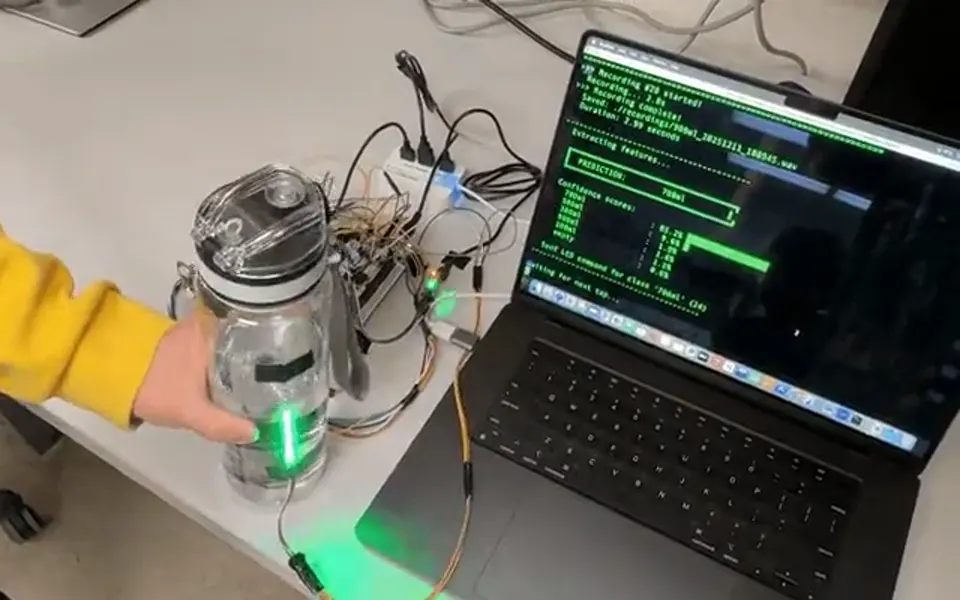
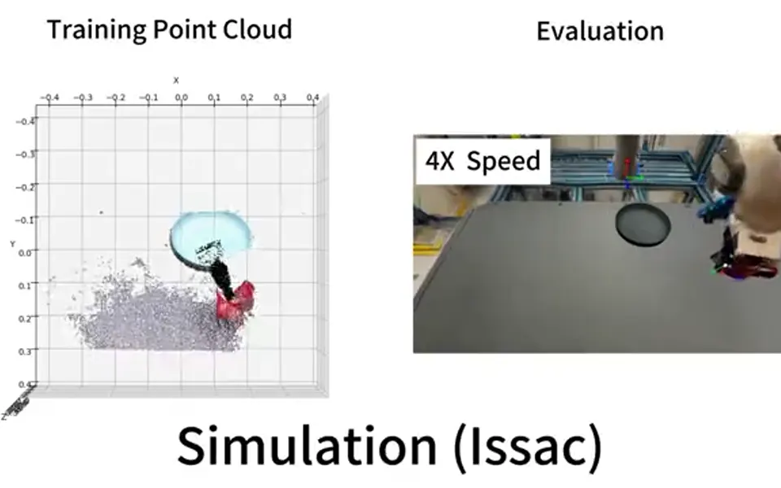

HydroSense
A bottle-agnostic water-level tracker: a bone-conduction mic, MFCC features and an SVM on an STM32.
EECS 373STM32MFCCSVM
Projects
Robots, sensors and models, most of them run on real hardware. The footage plays as you scroll past.

A manipulation policy learned from human RGB-D demonstrations with a RISE-based diffusion policy, so the robot learns by watching people.

A 3D walkthrough of one forward pass of a fine-tuned SmolVLA robot policy, with the real numbers at every step, from two camera images to 5 seconds of joint angles.

A bottle-agnostic water-level tracker: a bone-conduction mic, MFCC features and an SVM on an STM32.

Motion control, particle-filter SLAM, occupancy-grid mapping and A* planning, built from scratch in C++ with ROS 2 and run on a real robot.

A 3D-printed spice jar you can open and pour with one hand while cooking. Best Design at U-M's Thunderdome Innovation Contest.

MNIST digit classification running entirely on a microcontroller, with 5-bit quantized pixels streamed over UART.
A ROS 2, RealSense and AprilTag tracking stack feeding a Go2W quadruped for locomotion and multi-robot experiments.
A rectified-flow generative model in pure PyTorch: a velocity network carries noise to data along straight paths, sampled with Euler and Heun steps.
Logistic regression on gold, XP and kill differences at 25 minutes, from 10K+ match logs: 83.6% test accuracy, 0.92 ROC-AUC.
Curious how these work inside? Step-by-step visualizations ↗